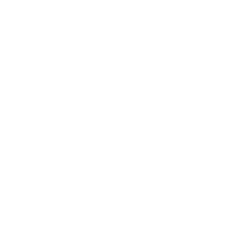

INTERVAL / IMPERIAL
CITY 77
Карта rp_localinterval
Мест —
Garry’s Mod · Imperial Network
IMPERIAL CITY
77
Город под контролем Союза. Дефицит ресурсов, постоянное наблюдение и борьба за выживание. Ваша история в Сити 77 начинается здесь.
Ожидание списка файлов
0 / 0
Совет по выживанию
Каждый звук может стоить вам жизни. В тишине можно услышать всё: шаги врагов, шорохи зомби. Двигайтесь бесшумно и не оставляйте следов.